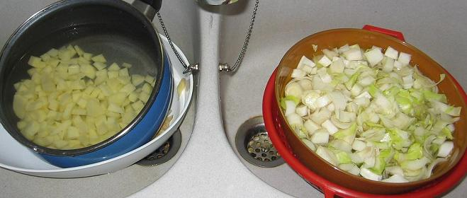

Recette n° 71 :
Potage à la fondue
d'endives du Briellec

Ingrédients : (pour
4 personnes)
- 600 g d'endives
- 400 g de pommes de terre
- 1 cuiller à soupe d'huile, ou de margarine, ou de beurre
- 2 cuillers à soupe de jus de citron
- 75 cl de bouillon de poule
- 100 g de fromage blanc à 0%
- 4 brins de cerfeuil (ou de ciboulette, ou de persil)
- sel, poivre, selon goût
Préparation :
- faire chauffer le bouillon
- sortir le fromage blanc du frigo afin qu'il ne soit pas froid quand
on l'utilisera
- émincer les
endives très finement (cf. photo ci-dessus), éplucher et
couper en petits cubes les pommes de terre
- mettre l'huile à chauffer dans une sauteuse, y mettre les
endives, le bouillon chaud, les pommes de terre, le jus de citron
- poivrer (normalement le bouillon évite de saler) et porter
à ébullition
- couvrir et laisser cuire à feu moyen 30 mn
- quand c'est cuit, en passer la moitié au mixer, et
remélanger le tout
- lier avec le fromage blanc
- refaire chauffer si nécessaire, mais surtout sans faire bouillir
(à cause du fromage blanc)
- servir dans des petites soupières avec les brins de cerfeuil
en décoration
Observations :
1 - recette
exécutée le 6 septembre 2006 à Quiberon pour 2
convives (F et JP)
2- bien appréciée ; son côté "régime"
(25 kcal/personne) passe inaperçu